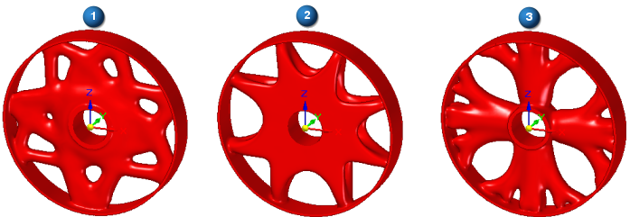
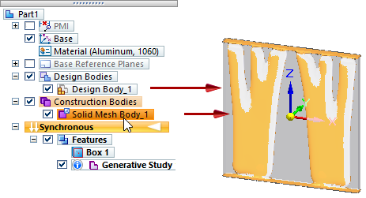
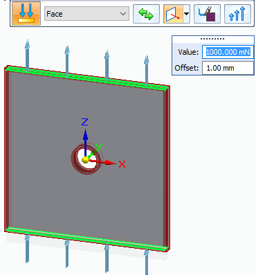
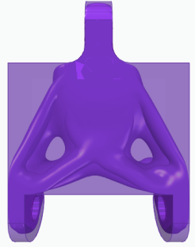
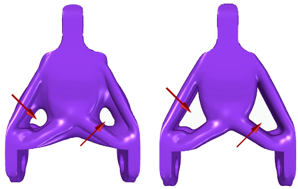
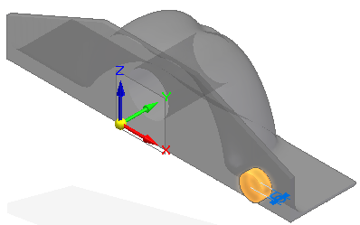

Using Generative Design results
There are many ways to use the stress information and material removal results produced by Generative Design. If you are satisfied with the resulting part, you can submit it for 3D printing directly from Solid Edge. (See Print an optimized solid mesh body.) But if you want to improve on the result, here are some techniques you can use within the same Solid Edge document.
Modify the study to see how different boundary conditions applied to different faces affect the resulting body. You also can use the study quality slider or the target mass slider to significantly change the result.
Compare multiple structural optimization studies for the same part, producing a different optimized mesh body each time.
Directly edit the original model, and then regenerate the mesh body.
Create a Solid Edge Simulation study for the original design body to identify high-stress areas, and then compare this to the stresses on the structurally optimized result. To watch a video and learn how to do this, see Use simulation results to inform generative studies.
Improve the original part design
Based on the results of the structural optimization, you may decide you need to make small changes to the original part before you optimize it again. For example, you may need to simplify the original part, or thicken it, or change the diameter of a hole feature, or add a cutout. You can switch fluidly between making synchronous edits to regenerating and updating your mesh body result.
To edit the model, first select the Design Body 1 entry in PathFinder to display the original part body, and then modify it using any synchronous modeling commands on the ribbon.
To reprocess the generative study using the same loads and constraints, display the Solid Mesh Body 1, under Construction Bodies, and select the Generate command again.
To learn more, watch this video:
Work with multiple studies
As you work with the study results, you have the option of overwriting existing results or creating new results. To overwrite the generated study result, simply change input values or optimization parameters, and then select the Generate command again.
If you do not want to overwrite the original study, you can create new studies in the same document to test alternatives. To preserve the original study inputs and use them as the basis for a new study, you can use the Duplicate Generative Study shortcut command, which copies all of the inputs but not the result. If you want to test different boundary conditions, you can create multiple new studies using the Create Generative Study command on the ribbon, and then add the boundary conditions you want to apply.
If you are working with multiple studies, ensure that the study you intend to modify is the active study. The active study is indicated by blue text.
Experiment with loads and constraints
If appropriate to the part and how it is intended to operate, you can experiment with different loads and constraints to improve the resulting mesh body. In the following example, you can see how changing the type of load that is applied to a face produces very different results.
(1) Torque load
(2) Force load
(3) Pressure load

To add new boundary conditions to an existing mesh body, you must select the faces on the original design space. To do that, use PathFinder check boxes to display Design Bodies→Design Body 1. This is the original design body. You also can make it easier to work with the design body by hiding the mesh body associated with the generative study result. Use the Construction Bodies→Solid Mesh Body 1 check box to hide it.

To change the values of an existing load on a solid mesh body, double-click the object in the Generative Design pane, for example, Force 1. This displays the load and the command bar in the graphics window.

You can evaluate the effect of individual loads and constraints on study geometry by turning them off and on using the Suppress and Unsuppress shortcut commands. When you solve the study, the boundary conditions that are suppressed are not processed. For more information, see Suppress individual loads to compare results.
To account for a part undergoing different types of loading conditions in a study, but not all at the same time, you can group them in the functional order they occur. For more information, see Using load cases.
Compare results to find the best solution
You can compare the solutions resulting from different optimization targets. By changing the settings for study quality, or the target mass reduction, or by optimizing to a factor of safety in the Generate Study dialog box, you can generate different output bodies as the result. A quick visual review of each resulting shape and its associated stress results lets you determine the best result for your needs.

Compare the following solid mesh bodies optimized using different study quality values. The result on the left was generated using a low study quality value. The result on the right was generated using a medium study quality.

This view of the part indicates that too much material was removed during optimization. You can use the Preserve Region command to preserve additional material around the top mounting hole where the fixed constraint is applied.
Here are some things to consider as you make changes to the study inputs:
Where you apply a load or constraint can have a dramatic effect on the result. For example, you can add a fixed constraint and a force load to the same face.
Preserve any region that includes a face where you apply a load or constraint.
Applying more forces to a part means you need to start with more material on the design body. This gives the optimizer more material with which to work.
While the default offset values are appropriate for many cases, you can increase these values to prevent too much material from being removed.
Add material to the generated mesh body
You can use synchronous Solid Edge solid modeling and surface modeling to add and remove material from the generated solid mesh body using some basic Boolean operation modeling commands. Notice, however, that although the generated body can be selected as a whole, elements such as faces, edges, and nodes are not individually selectable. This is because the body is a mesh of triangles, not a Parasolid body.
For information about how to work with the mesh body, see Add material to a generated mesh body.
